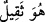
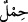
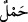

sözlerini “Halbuki onların hiçbir günahını yüklenecek değillerdir.” (el-Ankebut
29/12) sözüyle nasıl tekzip etmektedir!
Buradan kıyâmette mazlûmların mâsiyetlerinin zâlimlere yükleniş gerekçesi
bilinmektedir. Evet, yine burada mazlûmun günahının biraz hafifletilmesi söz konusu
olsa da gerçekte yüklenilen günah, zulmün cezâsıdır. Bu uygulama başkalarına sârî ve
geçici olan günahlarda cârîdir. Bu konu, En’am suresinin sonlarında (el-En’am 6/164)
anlatılmıştır.
et-Te’vîlâtü’n-Necmiyye’de kaydedildiğine göre, bu âyette şuna işâret edilmektedir:
Allah Teâlâ’nın yarattığı her yaratıkta o yaratığa özel bir sırrı vardır. Allah Teâlâ
herkesle özel ilgilenir. Herkes yüklendiği sorumlulukla sorgulanır. Nitekim her tohum
özüne konulan bitkiyi bitirir; başka bir tohumun bitkisini bitirmekten sorgulanmaz. Zira
tohum ancak kendisine yüklenilen şeyden sorumludur. Şeyh Sâdî der ki:
Harzehre (Ebucehil karpuzu) dalı hurma vermez;
Ne ekersen onu biçersin.
“Yükü (günahı) ağır gelen kimse onu taşımak için başkasını çağırsa, bu çağırdığı”
baba, anne, evlat, kardeş ve benzerleri gibi “akrabası da olsa, onun yükünden bir şey
yüklenmez.”
Râğıb, Müfredât’da der ki, ağırlık ve hafiflik birbirine zıt (mütekâbil) iki şeydir.
Tartı ve takdirde hangisi üstün olursa o ağır demektir. Aslında “__WORD__ Bu ağırdır”
denildiğinde bir cisim kasdedilir. Fakat bu kelime sonradan “mânâ”larda da
kullanılmıştır. Meselâ “borç ve günah ona ağır geldi” denilir. Kıyâmette sâhibine ağır
geleceği ve dünyada da onu sevaptan geri bıraktığı için günaha “ağırlık” denmiştir.
Sırtta taşınan zâhirî yüklere “__WORD__; anne karnındaki cenin gibi içte taşınanlara ise “ __WORD__ ” denilir.
Zira o gün herkesin kendisini başkasından müstağnî kılacak ciddî meşgalesi ve
taşımaktan âciz olduğu bir yükü vardır. Bu âyet, Allah Teâlâ’nın yalnız suçluyu
cezalandıracağına ve müttakî kullar dışında akrabadan yardım talep etmenin faydasız
olduğuna delildir. İbn Abbâs (r.a.) der ki: “Kıyâmette anne ve baba oğlu ile karşılaşır
ve “yavrucuğum günahlarımdan bir kısmını yüklen” der. Oğul, “Buna gücüm yetmez.
Benim günahım bana yeter” der. Yine kişi hanımından yardım ister: “Ben dünyada senin
eşindim. Sen çok iyi bir hatunsun. Şimdi senin bana vereceğin zerre kadar bir sevaba
muhtacım; bunu bulursam belki şu gördüğün azaptan kurtulurum” der. Hanımı “İstediğin
şey pek kolay ve basit bir şey; ancak benim buna gücüm yetmez. Senin korktuğun
durumdan ben de korkuyorum” der.”
Hiçbir kardeş diğerine merhamet etmez;
Hiçbir evlâd babasına hayır etmez.
Kız annesinin yanından kaçmak ister.
Tüm yakınlar arasında dostluk bitmiş, kaybolmuş.